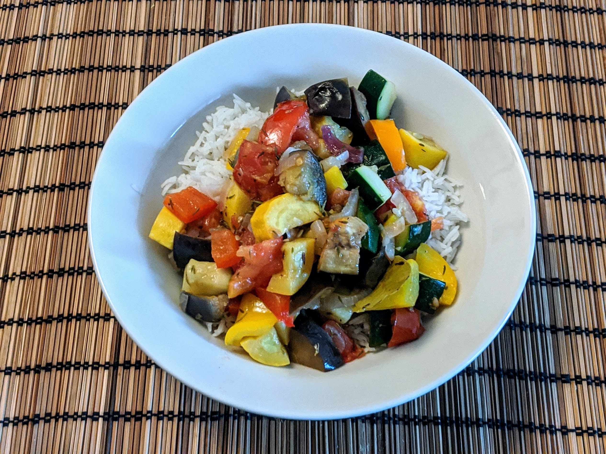

Ratatouille

Pour 4 personnes :
- 2 aubergines
- 2 courgettes
- 2 poivrons (un rouge, un vert)
- 3-4 tomates
- Un bel oignon, ou 4 petits oignons frais
- 3 gousses d'ail
- Sel, poivre, thym, laurier
- Huile d'olive
- Éplucher les oignons et laver les autres légumes. Faire chauffer un peu d'huile au fond d'une cocotte.
- Couper les légumes et les mettre au fur et à mesure dans la cocotte à feu moyen, dans cet ordre : oignons, aubergines, courgettes, poivrons, tomates.
- Ajouter l'ail écrasé, le thym, le laurier, saler, poivrer, et faire mijoter à feu doux et à couvert pendant une grosse vingtaine de minutes. Vérifier fréquemment que ça n'attache pas, surtout au début. Si ça attache, ajouter un tout petit peu d'eau et racler les bords de la cocotte avec une spatule.
- Servir chaud, ou une fois refroidi.
Retour à la liste des recettes